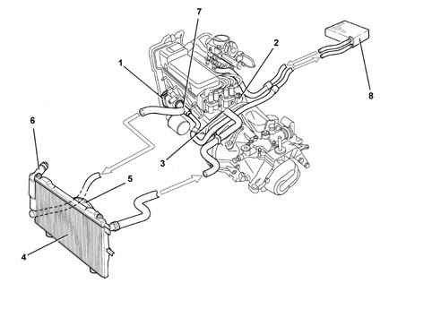
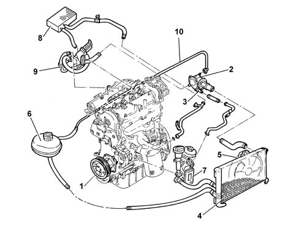

Introduction - ENGINE COOLING
- Path
- Descriptions > 10 ENGINE > 1088 ENGINE COOLING > Introduction - ENGINE COOLING
- Kind
- system description
- Applies to
- all engines; all production periods
- Interactive page
- https://sloeber94.github.io/elrnDB-fPnd/en/#/2753463
Applies to: engines: 1.1, 1.2 8v; all production periods
.

1, Water pump 2, Engine coolant temperature sensor 3, Thermostat 4, Radiator 5, Electric fan 6, Reservoir 7, Water pump rigid inlet pipe 8, Heater unit
Applies to: engines: 1.3 JTD 16v; all production periods
COOLING SYSTEM

1 - Water pump 2 - Engine coolant temperature sensor Characteristic of working principle1060G pressure pump electric control 3 - Thermostat 4 - Radiator 5 - Electric fan 6 - Reservoir 7 - Engine oil heat exchanger 8 - Vehicle interior heating radiator 9 - E.G.R. exhaust gas heat exchanger Characteristic of working principle 1080Cexhaust gas recirculation system (e.g.r.) 10 - Water recirculation pipe